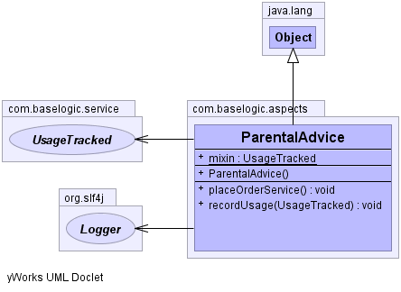

com.baselogic.aspects
Class ParentalAdvice
java.lang.Object
 com.baselogic.aspects.ParentalAdvice
com.baselogic.aspects.ParentalAdvice
public class ParentalAdvice
- extends Object
ParentalAdvice
Introductions (known as inter-type declarations in AspectJ) enable an
aspect to declare that advised objects implement a given interface,
and to provide an implementation of that interface on behalf of
those objects.
Spring Certification objective: 2.1 AOP Recommendations
Spring Certification objective: 2.2 AOP Pointcuts
Spring Certification objective: 2.3 AOP Advice
- Since:
- 2012
- Author:
- Mick Knutson
- See Also:
- Objective 2.1 AOP Recommendations,
Objective 2.2 AOP Pointcuts,
Objective 2.3 AOP Advice,
Blog: http://baselogic.com,
LinkedIN: http://linkedin.com/in/mickknutson,
Twitter: http://twitter.com/mickknutson,
Git hub: http://github.com/mickknutson,
JavaEE 7 Cookbook Packt,
JavaEE 7 Cookbook Amazon
-
-

| Methods inherited from class java.lang.Object |
clone, equals, finalize, getClass, hashCode, notify, notifyAll, toString, wait, wait, wait |
mixin
public static UsageTracked mixin
ParentalAdvice
public ParentalAdvice()
placeOrderService
public void placeOrderService()
recordUsage
public void recordUsage(UsageTracked usageTracked)
true